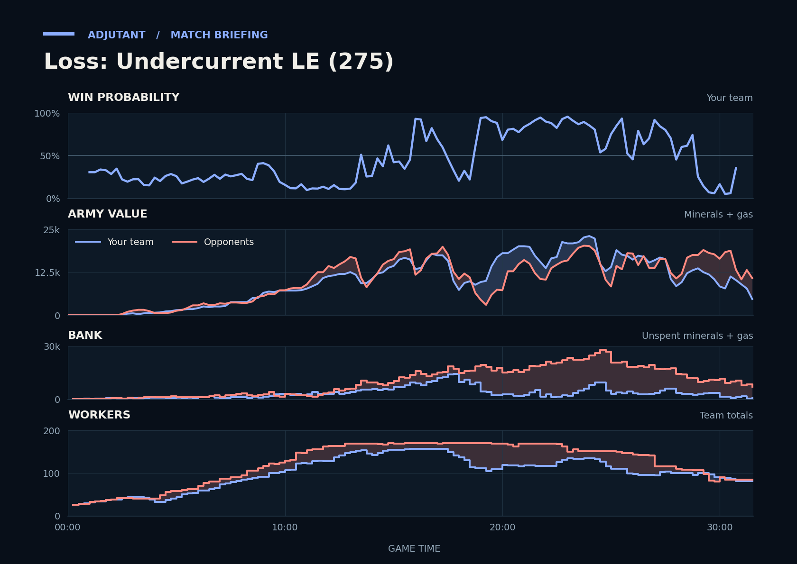

Loss: Undercurrent LE (275)
Provisional debrief. The full report (timeline, insights and analysis) is being generated.

Cached narration uses different analysis inputs (facts, engine notes, prompts or model settings). It has not been regenerated for this report.
**Loss.** You lost because TakeTheTip attacked CSM's eighth at 31:10 with a smaller army and lost far more than CSM did.
**Why**
- 29:03–30:56: Scallop lost 17 Vikings at their third, mostly to PBOY's Tempests, leaving Scallop less than half their army afterward.
- 30:00: Unseen, CSM's army with about 9,300 minerals and gas unspent behind it later outsized TakeTheTip's going into CSM's eighth.
- 31:10–31:29: TakeTheTip went in 1.7x behind at CSM's eighth, then lost far more army, mostly to Hydralisks; Scallop typed gg.
Current engine analysis: Loss. Review 28:45–29:14: the opponents' tech and upgrades pulled ahead.